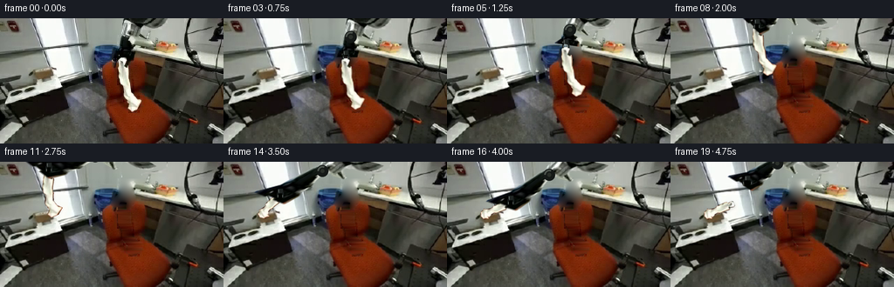
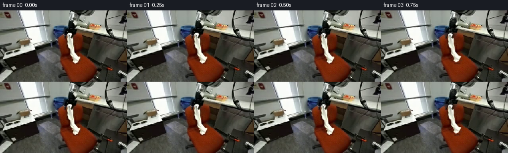
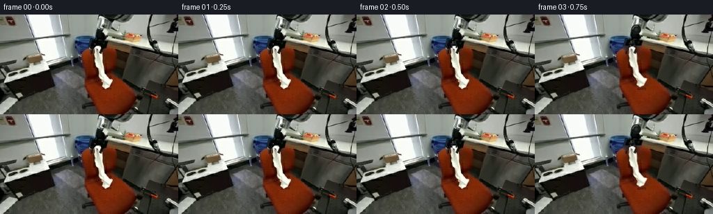

CODING AGENTS AS PIXEL WORLD MODELS
traex/GPT-6.1-Sol · common50_0011
点击播放 · 原生 RGB 像素
逐轮保存的候选
回放视频、检查图与代码变化。
每份候选均可单独播放。实际图片检查记录在下方工具轨迹中。
候选 01播放与检查图
点击播放 · 原生 RGB 像素


展开代码变化
--- 上一保存版本
+++ 本次保存版本
@@ -0,0 +1,186 @@
+from pathlib import Path
+import numpy as np
+from PIL import Image, ImageDraw, ImageFilter
+import artifact_io
+
+ROOT=Path(__file__).resolve().parent
+W,H=256,144
+S=4
+im=np.array(Image.open(ROOT/'first_frame.png').convert('RGB'))
+yy,xx=np.mgrid[:H,:W]
+# The textile is sampled as a narrow ruled surface, including its real creases.
+edge=np.array([(45,137.2,143.3),(46,135.7,144),(48,135.2,145),(51,135.1,144),(54,135.0,142.8),(55,135.0,147),(57,134.7,147.6),(61,135.1,147.7),(65,135.2,147.6),(68,135.2,147.6),(72,136.3,148.3),(75,137.7,149.6),(78,140.5,149.7),(82,140.5,150.4),(85,140.5,151),(88,140.7,153.2),(91,142.3,155.8),(93,144.5,160.3),(94,144.6,162.3),(97,146.7,161.1),(100,146.5,159.9),(103,145.7,158.8),(105,147.5,156),(106,149,153.7),(107,150.5,152.3)],float)
+left=np.interp(yy,edge[:,0],edge[:,1]);right=np.interp(yy,edge[:,0],edge[:,2])
+clothmask=np.clip(np.minimum(xx-left+.65,right-xx+.65),0,1)*((yy>=45)&(yy<=107))
+# Restore the hidden upholstery with row-wise continuation from either side.
+clean=im.astype(float).copy()
+for y in range(45,108):
+ l=int(np.floor(left[y,0]));r=int(np.ceil(right[y,0]));
+ a=im[y,max(l-3,0):l-1].astype(float).mean(0)
+ b=im[y,r+1:r+3].astype(float).mean(0)
+ for x in range(l,r+1):
+ t=(x-l+.5)/(r-l+1)
+ c=a*(1-t)+b*t
+ # Surface grain continues across the formerly covered area.
+ noise=(float(im[y,max(122,x-22)].mean())-float(im[max(0,y-1),max(122,x-22)].mean()))*.17
+ clean[y,x]=np.clip(c+noise,0,255)
+
+def poly_mask(points):
+ m=Image.new('L',(W*S,H*S));ImageDraw.Draw(m).polygon([(int(x*S),int(y*S)) for x,y in points],fill=255)
+ return np.array(m.resize((W,H),Image.Resampling.LANCZOS))/255.
+upper_poly=[(141,0),(191,0),(190,7),(184,10),(168,12),(161,14),(164,18),(168,20),(169,23),(160,25),(153,22),(148,24),(140,23),(136,21),(140,18),(139,9),(139,4)]
+lower_poly=[(138,20),(148,21),(151,28),(154,32),(154,37),(156,39),(155,46),(151,50),(148,55),(145,56),(144,51),(145,47),(138,46),(135,52),(131,53),(127,50),(127,45),(132,40),(135,37),(136,29)]
+um=poly_mask(upper_poly);lm=poly_mask(lower_poly)
+robotmask=np.maximum(um,lm)
+# Background harmonic continuation: no new scene elements are introduced.
+binary=robotmask>.03
+buf=clean.copy()
+for y in range(0,23):
+ for x in np.where(binary[y])[0]:
+ if y<19:
+ a=clean[y,132:137].mean(0);b=clean[y,195:200].mean(0)
+ t=np.clip((x-136)/60,0,1)
+ buf[y,x]=a*(1-t)+b*t
+# Freeze the upper background plane; solve the small occluded lower region.
+unknown=binary & (yy>=19)
+for _ in range(480):
+ avg=(np.roll(buf,1,0)+np.roll(buf,-1,0)+np.roll(buf,1,1)+np.roll(buf,-1,1))*.25
+ buf[unknown]=avg[unknown]
+base=clean*(1-robotmask[:,:,None])+buf*robotmask[:,:,None]
+base=np.clip(base,0,255).astype(np.uint8)
+Image.fromarray(base).save(ROOT/'background_reconstructed.png')
+Image.fromarray((clothmask*255).astype(np.uint8)).save(ROOT/'cloth_alpha.png')
+
+# Rigid, two-link spatial kinematics. Depth accounts for the strong initial
+# foreshortening; link lengths never change as the robot reaches across.
+A=np.array([179.,-13.,0.]);E0=np.array([146.,22.,58.]);T0=np.array([140.,40.,1.])
+L1=np.linalg.norm(E0-A);L2=np.linalg.norm(T0-E0)
+e0=(T0-A)/np.linalg.norm(T0-A)
+c0=(L1*L1-L2*L2+np.linalg.norm(T0-A)**2)/(2*np.linalg.norm(T0-A))
+n0=(E0-A-c0*e0);n0/=np.linalg.norm(n0)
+def pose(tip):
+ target=np.array([tip[0],tip[1]-7,1.])
+ d=np.linalg.norm(target-A);e=(target-A)/d
+ c=(L1*L1-L2*L2+d*d)/(2*d)
+ n=n0-e*np.dot(n0,e);n/=np.linalg.norm(n)
+ elbow=A+c*e+np.sqrt(max(0,L1*L1-c*c))*n
+ return elbow,target
+
+# Photo-textured rigid links. Each affine projection is the projection of a
+# fixed link; its transverse dimension stays constant throughout the motion.
+upper_alpha=um.copy();lower_alpha=lm.copy()
+upper_alpha[yy>23]=0
+lower_alpha[(yy<21)|(yy>45)]=0
+lower_alpha*=1-clothmask
+# overlap of the mechanical elbow is intentional; the wrist is separate.
+def warp_link(rgb,alpha,p0,p1,q0,q1):
+ p0=np.asarray(p0);p1=np.asarray(p1);q0=np.asarray(q0);q1=np.asarray(q1)
+ pv=p1-p0;qv=q1-q0
+ lp=np.linalg.norm(pv);lq=np.linalg.norm(qv)
+ pu=pv/lp;qu=qv/lq;pn=np.array([-pu[1],pu[0]]);qn=np.array([-qu[1],qu[0]])
+ M=(lp/lq)*np.outer(pu,qu)+np.outer(pn,qn)
+ off=p0-M@q0
+ coeff=(M[0,0]/S,M[0,1]/S,off[0],M[1,0]/S,M[1,1]/S,off[1])
+ rgba=np.dstack([rgb,np.uint8(np.clip(alpha,0,1)*255)])
+ return Image.fromarray(rgba).transform((W*S,H*S),Image.Transform.AFFINE,coeff,Image.Resampling.BICUBIC)
+
+# Cloth warp, using source pixels rather than a procedurally white polygon.
+source=im.astype(float)
+def sample_bilinear(x,y):
+ x=np.clip(x,0,W-1.001);y=np.clip(y,0,H-1.001)
+ x0=x.astype(int);y0=y.astype(int);fx=(x-x0)[:,None];fy=(y-y0)[:,None]
+ return (source[y0,x0]*(1-fx)*(1-fy)+source[y0,x0+1]*fx*(1-fy)+source[y0+1,x0]*(1-fx)*fy+source[y0+1,x0+1]*fx*fy)
+def tri_warp(dest,alpha,dp,sp):
+ dp=np.array(dp)*S;sp=np.array(sp)
+ xmin=max(0,int(np.floor(dp[:,0].min())));xmax=min(W*S-1,int(np.ceil(dp[:,0].max())))
+ ymin=max(0,int(np.floor(dp[:,1].min())));ymax=min(H*S-1,int(np.ceil(dp[:,1].max())))
+ if xmax<xmin or ymax<ymin:return
+ X,Y=np.meshgrid(np.arange(xmin,xmax+1)+.5,np.arange(ymin,ymax+1)+.5)
+ v0=dp[1]-dp[0];v1=dp[2]-dp[0];det=v0[0]*v1[1]-v0[1]*v1[0]
+ if abs(det)<1e-7:return
+ dx=X-dp[0,0];dy=Y-dp[0,1]
+ u=(dx*v1[1]-dy*v1[0])/det;v=(v0[0]*dy-v0[1]*dx)/det
+ inside=(u>=-1e-6)&(v>=-1e-6)&(u+v<=1+1e-6)
+ if not inside.any():return
+ uv=np.stack([u[inside],v[inside]],1)
+ coords=sp[0]+uv[:,0,None]*(sp[1]-sp[0])+uv[:,1,None]*(sp[2]-sp[0])
+ color=sample_bilinear(coords[:,0],coords[:,1])
+ localx=X[inside].astype(int);localy=Y[inside].astype(int)
+ dest[localy,localx]=np.uint8(np.clip(color,0,255));alpha[localy,localx]=255
+
+# Scene timing: pinch, clear the chair, transfer over counter, lay down,
+# release, then withdraw without carrying the deposited fabric.
+poses=[(140,47),(140,47),(140,47),(140,46),(139,41),(136,33),(129,24),(116,16),(99,10),(79,8),(63,9),(56,10),(56,18),(59,29),(65,40),(73,48),(73,48),(74,43),(81,32),(88,25)]
+hems=[(152,106),(152,106),(152,106),(152,105),(151,100),(149,90),(142,80),(129,72),(112,66),(89,64),(71,64),(60,64),(53,65),(47,65),(42,64),(39,63),(39,63),(39,63),(39,63),(39,63)]
+
+def cloth_layer(i):
+ top=np.array(poses[min(i,16)],float);bottom=np.array(hems[min(i,16)],float)
+ lay=np.clip((i-11)/4,0,1)
+ ys=edge[:,0];vs=(ys-45)/62
+ srcpoints=[];dstpoints=[]
+ for row,(y,l,r),v in zip(range(len(edge)),edge,vs):
+ oldcenter=(l+r)/2
+ # Keep the existing longitudinal folds on the hanging fabric. During laydown
+ # these folds rotate with the fabric and settle onto the countertop plane.
+ originaloff=(oldcenter-140)-12*v
+ center=top*(1-v)+bottom*v
+ center[0]+=originaloff*(1-lay)+np.sin(v*np.pi)*(-2.1*lay)
+ vec=bottom-top;vec/=max(np.linalg.norm(vec),1e-7)
+ norm=np.array([vec[1],-vec[0]])
+ if norm[0]<0:norm=-norm
+ initialnormal=np.array([1.,0.])
+ n=initialnormal*(1-lay)+norm*lay;n/=np.linalg.norm(n)
+ half=(r-l)/2*(1-.23*lay)
+ srcpoints.append([(l,y),(r,y)])
+ dstpoints.append([center-n*half,center+n*half])
+ dest=np.zeros((H*S,W*S,3),np.uint8);alpha=np.zeros((H*S,W*S),np.uint8)
+ for j in range(len(edge)-1):
+ tri_warp(dest,alpha,[dstpoints[j][0],dstpoints[j][1],dstpoints[j+1][1]],[srcpoints[j][0],srcpoints[j][1],srcpoints[j+1][1]])
+ tri_warp(dest,alpha,[dstpoints[j][0],dstpoints[j+1][1],dstpoints[j+1][0]],[srcpoints[j][0],srcpoints[j+1][1],srcpoints[j+1][0]])
+ return Image.fromarray(np.dstack([dest,alpha]))
+
+def draw_grip(canvas,point,opened=False):
+ d=ImageDraw.Draw(canvas);x,y=point
+ def line(points,col,width):d.line([(int(a*S),int(b*S)) for a,b in points],fill=col,width=int(width*S))
+ # A rigid wrist with parallel jaws. The jaw travel is the only grip motion.
+ line([(x,y-9),(x,y-4)],(31,36,34),6)
+ line([(x-2,y-8),(x-2,y-4)],(94,100,97),1)
+ gap=5 if opened else 3.2
+ line([(x-3,y-5),(x-gap,y-3),(x-gap,y+1)],(19,23,22),2)
+ line([(x+3,y-5),(x+gap,y-3),(x+gap,y+1)],(23,28,27),2)
+ line([(x-gap+.5,y-2),(x-gap+.5,y+.8)],(110,115,108),.75)
+ line([(x+gap-.5,y-2),(x+gap-.5,y+.8)],(98,105,99),.75)
+
+frames=[im.copy()]
+for i in range(1,20):
+ if i<=2:
+ frame=Image.fromarray(im).resize((W*S,H*S),Image.Resampling.LANCZOS).convert('RGBA')
+ # Preserve the photographic start, while the fingers establish contact.
+ if i==2:draw_grip(frame,poses[i],False)
+ else:
+ frame=Image.fromarray(base).resize((W*S,H*S),Image.Resampling.LANCZOS).convert('RGBA')
+ cloth=cloth_layer(i)
+ # Soft local contact shadow, beneath cloth on the chair/counter.
+ sh=cloth.getchannel('A').filter(ImageFilter.GaussianBlur(1.7*S))
+ shadow=Image.new('RGBA',frame.size,(26,24,19,0))
+ sh=np.array(sh).astype(float)*(.18 if i>=13 else .07)
+ shadow.putalpha(Image.fromarray(np.uint8(sh)))
+ frame.alpha_composite(shadow,(0,1*S))
+ frame.alpha_composite(cloth)
+ E,T=pose(poses[i])
+ upper=warp_link(im,upper_alpha,A[:2],E0[:2],A[:2],E[:2])
+ lower=warp_link(im,lower_alpha,E0[:2],T0[:2],E[:2],T[:2])
+ frame.alpha_composite(upper);frame.alpha_composite(lower)
+ # The original elbow cover is copied as a rigid circular hub to hide the
+ # overlap between projected links, never sheared with the lower link.
+ d=ImageDraw.Draw(frame)
+ ex,ey=E[:2]
+ d.ellipse([(int((ex-6.8)*S),int((ey-6.8)*S)),(int((ex+6.8)*S),int((ey+6.8)*S))],fill=(21,25,23,255))
+ d.arc([(int((ex-5.8)*S),int((ey-5.8)*S)),(int((ex+5.8)*S),int((ey+5.8)*S))],180,295,fill=(77,84,77,255),width=2*S)
+ d.ellipse([(int((ex-2.3)*S),int((ey-2.3)*S)),(int((ex+2.3)*S),int((ey+2.3)*S))],fill=(43,48,42,255))
+ draw_grip(frame,poses[i],i>=17)
+ frames.append(np.array(frame.convert('RGB').resize((W,H),Image.Resampling.LANCZOS)))
+frames=np.stack(frames).astype(np.uint8)
+frames[0]=im
+artifact_io.save(frames,ROOT)
+print('Saved',frames.shape,frames.dtype,'frame00 exact:',np.array_equal(frames[0],im))
候选 02播放与检查图
点击播放 · 原生 RGB 像素

展开代码变化
--- 上一保存版本
+++ 本次保存版本
@@ -72,6 +72,9 @@
upper_alpha[yy>23]=0
lower_alpha[(yy<21)|(yy>45)]=0
lower_alpha*=1-clothmask
+# Exclude blue pixels belonging to the stationary appliance behind the robot.
+blue=(im[:,:,2].astype(int)>im[:,:,0].astype(int)+15)&(im[:,:,2].astype(int)>im[:,:,1].astype(int)+6)
+lower_alpha[blue]=0
# overlap of the mechanical elbow is intentional; the wrist is separate.
def warp_link(rgb,alpha,p0,p1,q0,q1):
p0=np.asarray(p0);p1=np.asarray(p1);q0=np.asarray(q0);q1=np.asarray(q1)
@@ -154,11 +157,15 @@
frames=[im.copy()]
for i in range(1,20):
if i<=2:
+ underlying=im
frame=Image.fromarray(im).resize((W*S,H*S),Image.Resampling.LANCZOS).convert('RGBA')
+ pre_render=np.array(frame.convert('RGB').resize((W,H),Image.Resampling.LANCZOS)).astype(float)
# Preserve the photographic start, while the fingers establish contact.
if i==2:draw_grip(frame,poses[i],False)
else:
+ underlying=base
frame=Image.fromarray(base).resize((W*S,H*S),Image.Resampling.LANCZOS).convert('RGBA')
+ pre_render=np.array(frame.convert('RGB').resize((W,H),Image.Resampling.LANCZOS)).astype(float)
cloth=cloth_layer(i)
# Soft local contact shadow, beneath cloth on the chair/counter.
sh=cloth.getchannel('A').filter(ImageFilter.GaussianBlur(1.7*S))
@@ -179,7 +186,12 @@
d.arc([(int((ex-5.8)*S),int((ey-5.8)*S)),(int((ex+5.8)*S),int((ey+5.8)*S))],180,295,fill=(77,84,77,255),width=2*S)
d.ellipse([(int((ex-2.3)*S),int((ey-2.3)*S)),(int((ex+2.3)*S),int((ey+2.3)*S))],fill=(43,48,42,255))
draw_grip(frame,poses[i],i>=17)
- frames.append(np.array(frame.convert('RGB').resize((W,H),Image.Resampling.LANCZOS)))
+ rendered=np.array(frame.convert('RGB').resize((W,H),Image.Resampling.LANCZOS)).astype(float)
+ # Add only the rendered foreground delta. This avoids repeated resampling of
+ # any static background pixel, keeping the camera and room exactly fixed.
+ result=np.clip(underlying.astype(float)+rendered-pre_render,0,255).astype(np.uint8)
+ if i==1:result=im.copy()
+ frames.append(result)
frames=np.stack(frames).astype(np.uint8)
frames[0]=im
artifact_io.save(frames,ROOT)
可观测工具轨迹
实际执行的命令与返回图片。
命令 1exit 0
/bin/bash -lc 'ls -la; cat prompt.txt; cat GENERATION_RULES.md'
命令 2exit 0
/bin/bash -lc "cat task_spec.json; cat artifact_io.py; python - <<'PY'
from PIL import Image
import numpy as np
im=np.array(Image.open('first_frame.png'));print(im.shape)
# quantize coarse image to ascii RGB palette
colors={'K':(25,25,25),'g':(80,80,80),'s':(140,140,140),'W':(215,215,215),'O':(190,95,35),'r':(125,60,35),'Y':(185,155,100),'B':(65,90,130),'b':(30,45,65)}
a=np.array(list(colors.values()));keys=list(colors)
for y in range(0,144,3):
row=''
for x in range(0,256,3):
p=im[y:y+3,x:x+3].mean((0,1)); row+=keys[np.argmin(((a-p)**2).sum(1))]
print(f'{y:03d} '+row)
PY"命令 3exit 0
/bin/bash -lc "python - <<'PY'
from PIL import Image
import numpy as np
im=np.array(Image.open('first_frame.png'))
# show at 2x2 blocks semantic shade chars
cs={' ': (230,230,230),'.':(173,173,173),'-':(125,125,125),'+':(82,82,82),'#':(39,39,39),'@':(12,12,12),'o':(135,76,36),'r':(87,48,25),'y':(178,135,71),'b':(49,72,100),'B':(20,42,67)}
colors=np.array(list(cs.values()));keys=list(cs)
for y in range(0,144,2):
row=''
for x in range(0,256,2):
p=im[y:y+2,x:x+2].mean((0,1));row+=keys[np.argmin(((colors-p)**2).sum(1))]
print(f'{y:03d}|'+row)
print('PIXELS at 8 intervals')
for y in range(0,144,8):
print(y, ' '.join(f'{x}:{tuple(im[y,x])}' for x in range(0,256,16)))
PY"命令 4exit 0
/bin/bash -lc "python - <<'PY'
import numpy as np
from PIL import Image
p=np.array(Image.open('first_frame.png')).astype(int)
for y in range(0,112,1):
row=''
for x in range(100,180):
r,g,b=p[y,x];m=(r+g+b)/3
if r>g*1.35 and r>b*1.8 and r>70:c='O' if r>110 else 'o'
elif b>r+17 and b>g+7:c='B' if b>70 else 'b'
elif m>210:c='W'
elif m>170:c='.'
elif m>130:c='-'
elif m>90:c='='
elif m>55:c='+'
elif m>28:c='#'
else:c='@'
row+=c
print(f'{y:03d} '+row)
PY"命令 5exit 0
/bin/bash -lc "python - <<'PY'
import numpy as np
from PIL import Image
im=np.array(Image.open('first_frame.png')).astype(int)
# color run intervals top and robotic region
for y in [0,4,8,12,16,20,24,28,32,36,40,44,48,52,56]:
print('\\ny=',y)
for x in range(104,177,3): print(x,tuple(im[y,x]),end=';')
print()
# full at 1px top right grayscale
for y in range(0,58):
s=''
for x in range(100,196):
r,g,b=im[y,x];m=(r+g+b)/3
if b>r+17 and b>g+6:c='B'
elif r>g*1.35 and r>b*1.8 and r>70:c='O'
else:c='W' if m>210 else '.' if m>175 else '-' if m>135 else '=' if m>95 else '+' if m>60 else '#' if m>30 else '@'
s+=c
print('%02d '%y+s)
PY"命令 6exit 0
/bin/bash -lc "python - <<'PY'
import numpy as np
from PIL import Image
im=np.array(Image.open('first_frame.png'))
# cloth threshold boundaries
for y in range(44,108):
xs=np.where((im[y,:,0]>150)&(im[y,:,1]>150)&(np.arange(256)>131)&(np.arange(256)<168))[0]
print(y, xs.tolist())
# full top row for arm bounds
PY"命令 7exit 0
/bin/bash -lc "cat > generate.py <<'PY'
from pathlib import Path
import numpy as np
from PIL import Image, ImageDraw, ImageFilter
import artifact_io
ROOT=Path(__file__).resolve().parent
W,H=256,144
S=4
im=np.array(Image.open(ROOT/'first_frame.png').convert('RGB'))
yy,xx=np.mgrid[:H,:W]
# The textile is sampled as a narrow ruled surface, including its real creases.
edge=np.array([(45,137.2,143.3),(46,135.7,144),(48,135.2,145),(51,135.1,144),(54,135.0,142.8),(55,135.0,147),(57,134.7,147.6),(61,135.1,147.7),(65,135.2,147.6),(68,135.2,147.6),(72,136.3,148.3),(75,137.7,149.6),(78,140.5,149.7),(82,140.5,150.4),(85,140.5,151),(88,140.7,153.2),(91,142.3,155.8),(93,144.5,160.3),(94,144.6,162.3),(97,146.7,161.1),(100,146.5,159.9),(103,145.7,158.8),(105,147.5,156),(106,149,153.7),(107,150.5,152.3)],float)
left=np.interp(yy,edge[:,0],edge[:,1]);right=np.interp(yy,edge[:,0],edge[:,2])
clothmask=np.clip(np.minimum(xx-left+.65,right-xx+.65),0,1)*((yy>=45)&(yy<=107))
# Restore the hidden upholstery with row-wise continuation from either side.
clean=im.astype(float).copy()
for y in range(45,108):
l=int(np.floor(left[y,0]));r=int(np.ceil(right[y,0]));
a=im[y,max(l-3,0):l-1].astype(float).mean(0)
b=im[y,r+1:r+3].astype(float).mean(0)
for x in range(l,r+1):
t=(x-l+.5)/(r-l+1)
c=a*(1-t)+b*t
# Surface grain continues across the formerly covered area.
noise=(float(im[y,max(122,x-22)].mean())-float(im[max(0,y-1),max(122,x-22)].mean()))*.17
clean[y,x]=np.clip(c+noise,0,255)
def poly_mask(points):
m=Image.new('L',(W*S,H*S));ImageDraw.Draw(m).polygon([(int(x*S),int(y*S)) for x,y in points],fill=255)
return np.array(m.resize((W,H),Image.Resampling.LANCZOS))/255.
upper_poly=[(141,0),(191,0),(190,7),(184,10),(168,12),(161,14),(164,18),(168,20),(169,23),(160,25),(153,22),(148,24),(140,23),(136,21),(140,18),(139,9),(139,4)]
lower_poly=[(138,20),(148,21),(151,28),(154,32),(154,37),(156,39),(155,46),(151,50),(148,55),(145,56),(144,51),(145,47),(138,46),(135,52),(131,53),(127,50),(127,45),(132,40),(135,37),(136,29)]
um=poly_mask(upper_poly);lm=poly_mask(lower_poly)
robotmask=np.maximum(um,lm)
# Background harmonic continuation: no new scene elements are introduced.
binary=robotmask>.03
buf=clean.copy()
for y in range(0,23):
for x in np.where(binary[y])[0]:
if y<19:
a=clean[y,132:137].mean(0);b=clean[y,195:200].mean(0)
t=np.clip((x-136)/60,0,1)
buf[y,x]=a*(1-t)+b*t
# Freeze the upper background plane; solve the small occluded lower region.
unknown=binary & (yy>=19)
for _ in range(480):
avg=(np.roll(buf,1,0)+np.roll(buf,-1,0)+np.roll(buf,1,1)+np.roll(buf,-1,1))*.25
buf[unknown]=avg[unknown]
base=clean*(1-robotmask[:,:,None])+buf*robotmask[:,:,None]
base=np.clip(base,0,255).astype(np.uint8)
Image.fromarray(base).save(ROOT/'background_reconstructed.png')
Image.fromarray((clothmask*255).astype(np.uint8)).save(ROOT/'cloth_alpha.png')
# Rigid, two-link spatial kinematics. Depth accounts for the strong initial
# foreshortening; link lengths never change as the robot reaches across.
A=np.array([179.,-13.,0.]);E0=np.array([146.,22.,58.]);T0=np.array([140.,40.,1.])
L1=np.linalg.norm(E0-A);L2=np.linalg.norm(T0-E0)
e0=(T0-A)/np.linalg.norm(T0-A)
c0=(L1*L1-L2*L2+np.linalg.norm(T0-A)**2)/(2*np.linalg.norm(T0-A))
n0=(E0-A-c0*e0);n0/=np.linalg.norm(n0)
def pose(tip):
target=np.array([tip[0],tip[1]-7,1.])
d=np.linalg.norm(target-A);e=(target-A)/d
c=(L1*L1-L2*L2+d*d)/(2*d)
n=n0-e*np.dot(n0,e);n/=np.linalg.norm(n)
elbow=A+c*e+np.sqrt(max(0,L1*L1-c*c))*n
return elbow,target
# Photo-textured rigid links. Each affine projection is the projection of a
# fixed link; its transverse dimension stays constant throughout the motion.
upper_alpha=um.copy();lower_alpha=lm.copy()
upper_alpha[yy>23]=0
lower_alpha[(yy<21)|(yy>45)]=0
lower_alpha*=1-clothmask
# overlap of the mechanical elbow is intentional; the wrist is separate.
def warp_link(rgb,alpha,p0,p1,q0,q1):
p0=np.asarray(p0);p1=np.asarray(p1);q0=np.asarray(q0);q1=np.asarray(q1)
pv=p1-p0;qv=q1-q0
lp=np.linalg.norm(pv);lq=np.linalg.norm(qv)
pu=pv/lp;qu=qv/lq;pn=np.array([-pu[1],pu[0]]);qn=np.array([-qu[1],qu[0]])
M=(lp/lq)*np.outer(pu,qu)+np.outer(pn,qn)
off=p0-M@q0
coeff=(M[0,0]/S,M[0,1]/S,off[0],M[1,0]/S,M[1,1]/S,off[1])
rgba=np.dstack([rgb,np.uint8(np.clip(alpha,0,1)*255)])
return Image.fromarray(rgba).transform((W*S,H*S),Image.Transform.AFFINE,coeff,Image.Resampling.BICUBIC)
# Cloth warp, using source pixels rather than a procedurally white polygon.
source=im.astype(float)
def sample_bilinear(x,y):
x=np.clip(x,0,W-1.001);y=np.clip(y,0,H-1.001)
x0=x.astype(int);y0=y.astype(int);fx=(x-x0)[:,None];fy=(y-y0)[:,None]
return (source[y0,x0]*(1-fx)*(1-fy)+source[y0,x0+1]*fx*(1-fy)+source[y0+1,x0]*(1-fx)*fy+source[y0+1,x0+1]*fx*fy)
def tri_warp(dest,alpha,dp,sp):
dp=np.array(dp)*S;sp=np.array(sp)
xmin=max(0,int(np.floor(dp[:,0].min())));xmax=min(W*S-1,int(np.ceil(dp[:,0].max())))
ymin=max(0,int(np.floor(dp[:,1].min())));ymax=min(H*S-1,int(np.ceil(dp[:,1].max())))
if xmax<xmin or ymax<ymin:return
X,Y=np.meshgrid(np.arange(xmin,xmax+1)+.5,np.arange(ymin,ymax+1)+.5)
v0=dp[1]-dp[0];v1=dp[2]-dp[0];det=v0[0]*v1[1]-v0[1]*v1[0]
if abs(det)<1e-7:return
dx=X-dp[0,0];dy=Y-dp[0,1]
u=(dx*v1[1]-dy*v1[0])/det;v=(v0[0]*dy-v0[1]*dx)/det
inside=(u>=-1e-6)&(v>=-1e-6)&(u+v<=1+1e-6)
if not inside.any():return
uv=np.stack([u[inside],v[inside]],1)
coords=sp[0]+uv[:,0,None]*(sp[1]-sp[0])+uv[:,1,None]*(sp[2]-sp[0])
color=sample_bilinear(coords[:,0],coords[:,1])
localx=X[inside].astype(int);localy=Y[inside].astype(int)
dest[localy,localx]=np.uint8(np.clip(color,0,255));alpha[localy,localx]=255
# Scene timing: pinch, clear the chair, transfer over counter, lay down,
# release, then withdraw without carrying the deposited fabric.
poses=[(140,47),(140,47),(140,47),(140,46),(139,41),(136,33),(129,24),(116,16),(99,10),(79,8),(63,9),(56,10),(56,18),(59,29),(65,40),(73,48),(73,48),(74,43),(81,32),(88,25)]
hems=[(152,106),(152,106),(152,106),(152,105),(151,100),(149,90),(142,80),(129,72),(112,66),(89,64),(71,64),(60,64),(53,65),(47,65),(42,64),(39,63),(39,63),(39,63),(39,63),(39,63)]
def cloth_layer(i):
top=np.array(poses[min(i,16)],float);bottom=np.array(hems[min(i,16)],float)
lay=np.clip((i-11)/4,0,1)
ys=edge[:,0];vs=(ys-45)/62
srcpoints=[];dstpoints=[]
for row,(y,l,r),v in zip(range(len(edge)),edge,vs):
oldcenter=(l+r)/2
# Keep the existing longitudinal folds on the hanging fabric. During laydown
# these folds rotate with the fabric and settle onto the countertop plane.
originaloff=(oldcenter-140)-12*v
center=top*(1-v)+bottom*v
center[0]+=originaloff*(1-lay)+np.sin(v*np.pi)*(-2.1*lay)
vec=bottom-top;vec/=max(np.linalg.norm(vec),1e-7)
norm=np.array([vec[1],-vec[0]])
if norm[0]<0:norm=-norm
initialnormal=np.array([1.,0.])
n=initialnormal*(1-lay)+norm*lay;n/=np.linalg.norm(n)
half=(r-l)/2*(1-.23*lay)
srcpoints.append([(l,y),(r,y)])
dstpoints.append([center-n*half,center+n*half])
dest=np.zeros((H*S,W*S,3),np.uint8);alpha=np.zeros((H*S,W*S),np.uint8)
for j in range(len(edge)-1):
tri_warp(dest,alpha,[dstpoints[j][0],dstpoints[j][1],dstpoints[j+1][1]],[srcpoints[j][0],srcpoints[j][1],srcpoints[j+1][1]])
tri_warp(dest,alpha,[dstpoints[j][0],dstpoints[j+1][1],dstpoints[j+1][0]],[srcpoints[j][0],srcpoints[j+1][1],srcpoints[j+1][0]])
return Image.fromarray(np.dstack([dest,alpha]))
def draw_grip(canvas,point,opened=False):
d=ImageDraw.Draw(canvas);x,y=point
def line(points,col,width):d.line([(int(a*S),int(b*S)) for a,b in points],fill=col,width=int(width*S))
# A rigid wrist with parallel jaws. The jaw travel is the only grip motion.
line([(x,y-9),(x,y-4)],(31,36,34),6)
line([(x-2,y-8),(x-2,y-4)],(94,100,97),1)
gap=5 if opened else 3.2
line([(x-3,y-5),(x-gap,y-3),(x-gap,y+1)],(19,23,22),2)
line([(x+3,y-5),(x+gap,y-3),(x+gap,y+1)],(23,28,27),2)
line([(x-gap+.5,y-2),(x-gap+.5,y+.8)],(110,115,108),.75)
line([(x+gap-.5,y-2),(x+gap-.5,y+.8)],(98,105,99),.75)
frames=[im.copy()]
for i in range(1,20):
if i<=2:
frame=Image.fromarray(im).resize((W*S,H*S),Image.Resampling.LANCZOS).convert('RGBA')
# Preserve the photographic start, while the fingers establish contact.
if i==2:draw_grip(frame,poses[i],False)
else:
frame=Image.fromarray(base).resize((W*S,H*S),Image.Resampling.LANCZOS).convert('RGBA')
cloth=cloth_layer(i)
# Soft local contact shadow, beneath cloth on the chair/counter.
sh=cloth.getchannel('A').filter(ImageFilter.GaussianBlur(1.7*S))
shadow=Image.new('RGBA',frame.size,(26,24,19,0))
sh=np.array(sh).astype(float)*(.18 if i>=13 else .07)
shadow.putalpha(Image.fromarray(np.uint8(sh)))
frame.alpha_composite(shadow,(0,1*S))
frame.alpha_composite(cloth)
E,T=pose(poses[i])
upper=warp_link(im,upper_alpha,A[:2],E0[:2],A[:2],E[:2])
lower=warp_link(im,lower_alpha,E0[:2],T0[:2],E[:2],T[:2])
frame.alpha_composite(upper);frame.alpha_composite(lower)
# The original elbow cover is copied as a rigid circular hub to hide the
# overlap between projected links, never sheared with the lower link.
d=ImageDraw.Draw(frame)
ex,ey=E[:2]
d.ellipse([(int((ex-6.8)*S),int((ey-6.8)*S)),(int((ex+6.8)*S),int((ey+6.8)*S))],fill=(21,25,23,255))
d.arc([(int((ex-5.8)*S),int((ey-5.8)*S)),(int((ex+5.8)*S),int((ey+5.8)*S))],180,295,fill=(77,84,77,255),width=2*S)
d.ellipse([(int((ex-2.3)*S),int((ey-2.3)*S)),(int((ex+2.3)*S),int((ey+2.3)*S))],fill=(43,48,42,255))
draw_grip(frame,poses[i],i>=17)
frames.append(np.array(frame.convert('RGB').resize((W,H),Image.Resampling.LANCZOS)))
frames=np.stack(frames).astype(np.uint8)
frames[0]=im
artifact_io.save(frames,ROOT)
print('Saved',frames.shape,frames.dtype,'frame00 exact:',np.array_equal(frames[0],im))
PY
python generate.py"命令 8exit 0
/bin/bash -lc "python - <<'PY'
import numpy as np
from PIL import Image
for fi in [0,5,9,15,19]:
im=np.array(Image.open(f'frames/{fi:02d}.png')).astype(int)
print('\\nFRAME',fi)
for y in range(0,115,3):
s=''
for x in range(0,210,2):
r,g,b=im[y:y+3,x:x+2].mean((0,1));m=(r+g+b)/3
if r>g*1.35 and r>b*1.8 and r>70:c='O' if r>110 else 'o'
elif b>r+17 and b>g+7:c='B'
else:c='W' if m>215 else '.' if m>175 else '-' if m>135 else '=' if m>95 else '+' if m>60 else '#' if m>30 else '@'
s+=c
print('%03d '%y+s)
PY"命令 9exit 0
/bin/bash -lc "python - <<'PY'
# Invariant kinematics and transition checks (no visual tools).
import ast, pathlib, numpy as np
# load generator without running it again
s=pathlib.Path('generate.py').read_text();exec(s[:s.index('frames=[im.copy()]')])
for i in range(3,20):
E,T=pose(poses[i]);print(i,'elbow',np.round(E[:2],2),'lengths',round(np.linalg.norm(E-A),4),round(np.linalg.norm(T-E),4))
for i in [1,2,3,5,9,15,19]:
p=np.array(Image.open(f'frames/{i:02d}.png'));d=np.abs(p.astype(int)-im.astype(int));print(i,'diff',round(d.mean(),2),'changed',np.sum(d.max(2)>4))
PY"命令 10exit 0
/bin/bash -lc "python - <<'PY'
p='generate.py'
s=open(p).read()
s=s.replace('lower_alpha*=1-clothmask','lower_alpha*=1-clothmask\\n# Exclude blue pixels belonging to the stationary appliance behind the robot.\\nblue=(im[:,:,2].astype(int)>im[:,:,0].astype(int)+15)&(im[:,:,2].astype(int)>im[:,:,1].astype(int)+6)\\nlower_alpha[blue]=0')
s=s.replace(\"frame=Image.fromarray(im).resize((W*S,H*S),Image.Resampling.LANCZOS).convert('RGBA')\", \"underlying=im\\n frame=Image.fromarray(im).resize((W*S,H*S),Image.Resampling.LANCZOS).convert('RGBA')\\n pre_render=np.array(frame.convert('RGB').resize((W,H),Image.Resampling.LANCZOS)).astype(float)\")
s=s.replace(\"frame=Image.fromarray(base).resize((W*S,H*S),Image.Resampling.LANCZOS).convert('RGBA')\", \"underlying=base\\n frame=Image.fromarray(base).resize((W*S,H*S),Image.Resampling.LANCZOS).convert('RGBA')\\n pre_render=np.array(frame.convert('RGB').resize((W,H),Image.Resampling.LANCZOS)).astype(float)\")
s=s.replace(\"frames.append(np.array(frame.convert('RGB').resize((W,H),Image.Resampling.LANCZOS)))\", \"rendered=np.array(frame.convert('RGB').resize((W,H),Image.Resampling.LANCZOS)).astype(float)\\n # Add only the rendered foreground delta. This avoids repeated resampling of\\n # any static background pixel, keeping the camera and room exactly fixed.\\n result=np.clip(underlying.astype(float)+rendered-pre_render,0,255).astype(np.uint8)\\n if i==1:result=im.copy()\\n frames.append(result)\")
open(p,'w').write(s)
PY
python generate.py
python - <<'PY'
from PIL import Image
import numpy as np
p=np.load('pixels.npz')['pixels'];print('packed',p.shape,p.dtype)
f=np.array(Image.open('first_frame.png'));a=np.array(Image.open('frames/00.png'));assert np.array_equal(f,a)
print('exact frame00 confirmed')
for i in [1,2,3,8,15,19]:
a=np.array(Image.open(f'frames/{i:02d}.png'))
print('frame',i,'unchanged',np.mean(np.all(a==f,2)))
PY"保存候选 2 份；完成命令 10 次；可验证图片返回 0 张。原始 API 响应与完整日志保留在本地。